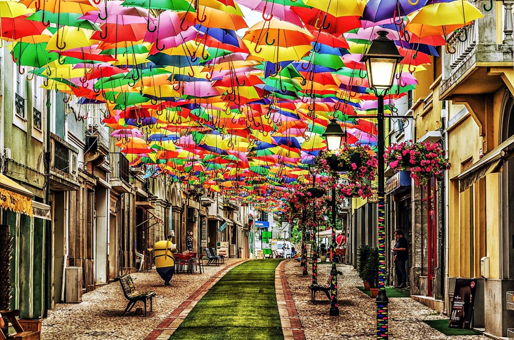
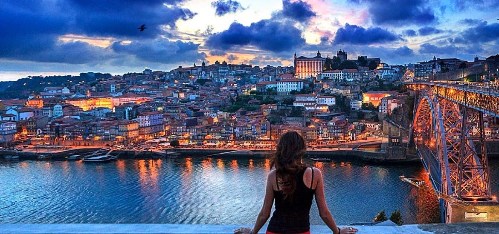
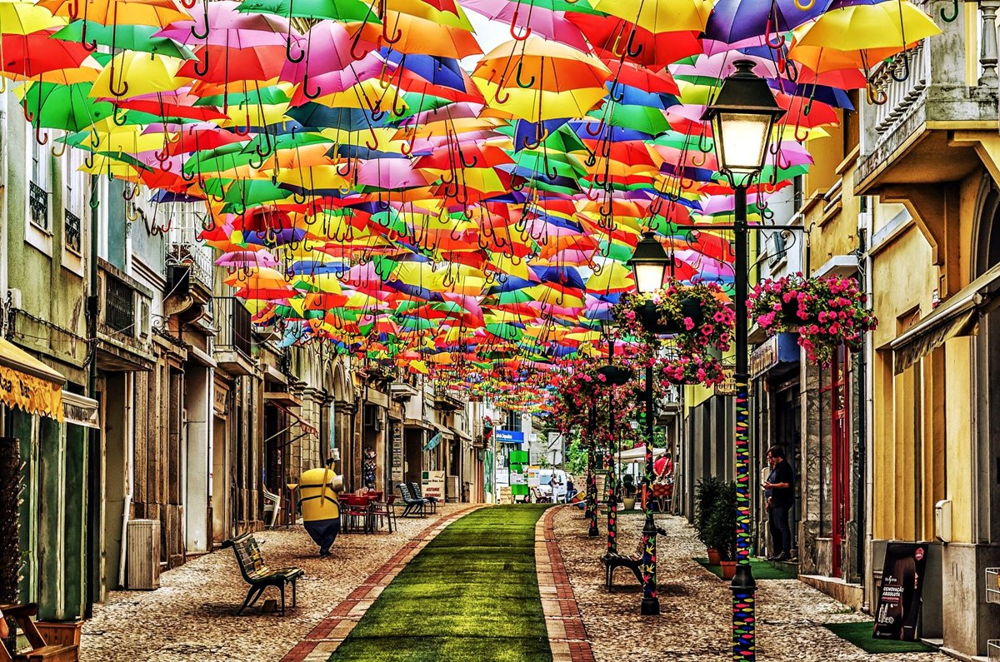
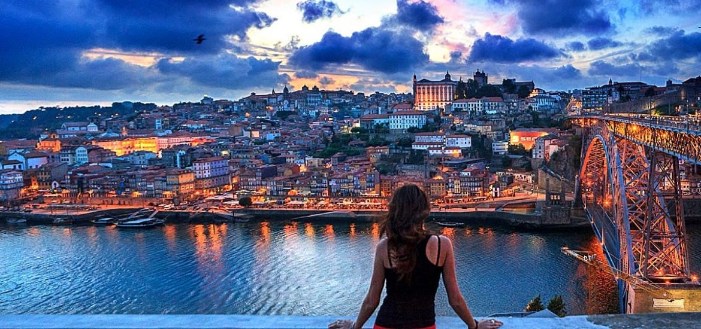

Enjoy a fun day of whitewater rafting on the Tamega River near Porto. Jump in a boat with fellow rafters and your instructor and traverse the various rapids along the river. Get your adrenaline pumping with two different intensity levels and enjoy the beautiful scenery as you paddle to the end of the course. Enjoy light refreshments throughout the day as well as all entrance fees. Rafting is a team sport where the aim of all participants is to steer a boat in tumultuous waters. It is practiced in a dinghy boat and led by an experienced guide along chutes full of adrenaline, with the backdrop of the idyllic banks of the River Tâmega.
The beach at Leça da Palmeira is located on the northern edge of the city of Porto, just across the harbour from Matosinhos. It is a similar mix of the industrial, historic and residential. The beach here is a good sized stretch of fine white sand. However, it is somewhat blighted by the huge stone pier at the southern end which protects the mouth of Leixões, one of Portugal's major sea ports. Beyond this are glimpses of cranes and to the north the tanks of the oil refinery. Despite all this Leça retains a certain degree of charm. At the southern end is the 17th century Fort of Leça da Palmeira whist at the northern end is the huge Farol da Boa Nova - Porto's lighthouse. Standing at 46m (150ft) the lighthouse dates back to 1926 when it was built to protect ships from overrunning the entrance to the port and ending up on the rocks.
Explore the coastal canals of Aveiro that include a Moliceiro cruise during a half-day guided trip from Porto. Aveiro’s charm lies in its Venice-like canals, which you will experience aboard a classic ‘moliceiro’ boat. Walking alongside an expert guide, discover more captivating sights of Aveiro’s town center. On your voyage back to Porto, stop in the spirited fishing town of Costa Nova and visit its spectacular white sand beaches. For your convenience, this tour offers both morning and afternoon departures.